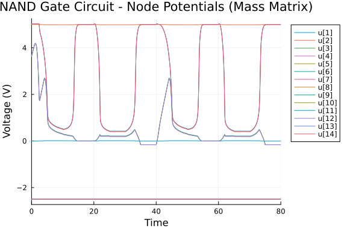
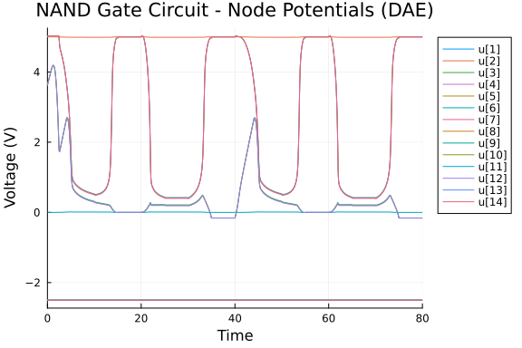
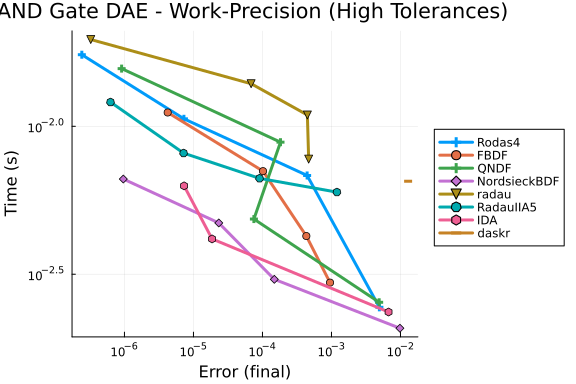
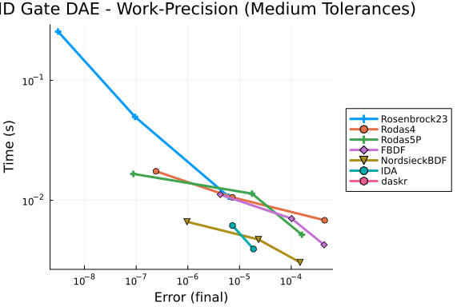
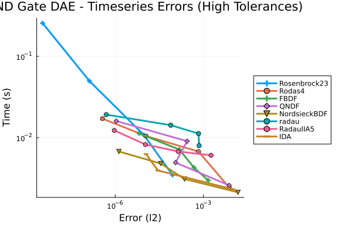
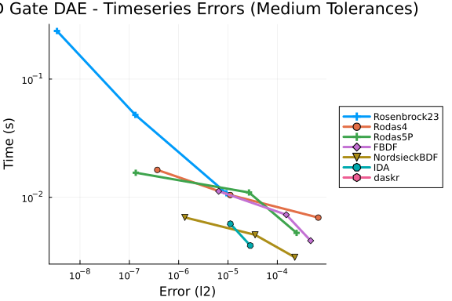
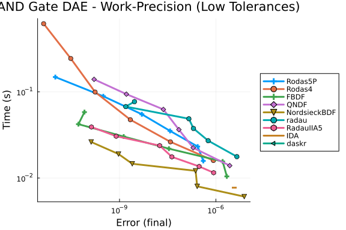
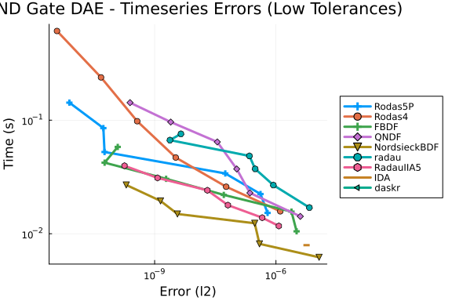
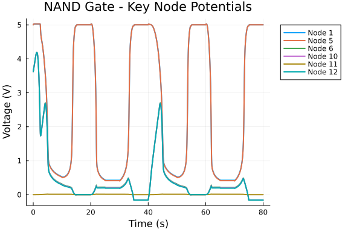

NAND Gate Differential-Algebraic Equation (DAE) Work-Precision Diagrams
using OrdinaryDiffEq, DiffEqDevTools, ModelingToolkit, ODEInterfaceDiffEq,
Plots, Sundials, DASSL, DASKR
using OrdinaryDiffEqBDF, OrdinaryDiffEqFIRK, OrdinaryDiffEqRosenbrock
using LinearAlgebra
using ModelingToolkit: t_nounits as t, D_nounits as DProblem Parameters
const RGS = 4.0
const RGD = 4.0
const RBS = 10.0
const RBD = 10.0
const CGS = 6e-5
const CGD = 6e-5
const CBD = 2.4e-5
const CBS = 2.4e-5
const C9 = 5e-5
const DELTA = 0.02
const CURIS = 1e-14
const VTH = 25.85
const VDD = 5.0
const VBB = -2.5
const VT0_DEPL = -2.43
const CGAMMA_DEPL = 0.2
const PHI_DEPL = 1.28
const BETA_DEPL = 5.35e-4
const VT0_ENH = 0.2
const CGAMMA_ENH = 0.035
const PHI_ENH = 1.01
const BETA_ENH = 1.748e-30.001748Input Signal Functions
function pulse(t, t_start, v_low, t_rise, v_high, t_high, t_fall, t_period)
t_mod = mod(t, t_period)
if t_mod < t_start
return v_low
elseif t_mod < t_start + t_rise
return v_low + (v_high - v_low) * (t_mod - t_start) / t_rise
elseif t_mod < t_start + t_rise + t_high
return v_high
elseif t_mod < t_start + t_rise + t_high + t_fall
return v_high - (v_high - v_low) * (t_mod - t_start - t_rise - t_high) / t_fall
else
return v_low
end
end
V1(t) = pulse(t, 0.0, 0.0, 5.0, 5.0, 5.0, 5.0, 20.0)
V2(t) = pulse(t, 0.0, 0.0, 15.0, 5.0, 15.0, 5.0, 40.0)
function V1_derivative(t)
t_mod = mod(t, 20.0)
if 0.0 < t_mod < 5.0
return 1.0
elseif 10.0 < t_mod < 15.0
return -1.0
else
return 0.0
end
end
function V2_derivative(t)
t_mod = mod(t, 40.0)
if 0.0 < t_mod < 15.0
return 1.0/15.0
elseif 20.0 < t_mod < 35.0
return -1.0/15.0
else
return 0.0
end
endV2_derivative (generic function with 1 method)MOSFET Model Functions
function gdsp(ned, vds, vgs, vbs)
if ned == 1
vt0, cgamma, phi, beta = VT0_DEPL, CGAMMA_DEPL, PHI_DEPL, BETA_DEPL
else
vt0, cgamma, phi, beta = VT0_ENH, CGAMMA_ENH, PHI_ENH, BETA_ENH
end
phi_vbs = max(phi - vbs, 1e-12)
phi_safe = max(phi, 1e-12)
vte = vt0 + cgamma * (sqrt(phi_vbs) - sqrt(phi_safe))
if vgs - vte <= 0.0
return 0.0
elseif 0.0 < vgs - vte <= vds
return -beta * (vgs - vte)^2 * (1.0 + DELTA * vds)
elseif 0.0 < vds < vgs - vte
return -beta * vds * (2.0 * (vgs - vte) - vds) * (1.0 + DELTA * vds)
else
return 0.0
end
end
function gdsm(ned, vds, vgd, vbd)
if ned == 1
vt0, cgamma, phi, beta = VT0_DEPL, CGAMMA_DEPL, PHI_DEPL, BETA_DEPL
else
vt0, cgamma, phi, beta = VT0_ENH, CGAMMA_ENH, PHI_ENH, BETA_ENH
end
phi_vbd = max(phi - vbd, 1e-12)
phi_safe = max(phi, 1e-12)
vte = vt0 + cgamma * (sqrt(phi_vbd) - sqrt(phi_safe))
if vgd - vte <= 0.0
return 0.0
elseif 0.0 < vgd - vte <= -vds
return beta * (vgd - vte)^2 * (1.0 - DELTA * vds)
elseif 0.0 < -vds < vgd - vte
return -beta * vds * (2.0 * (vgd - vte) + vds) * (1.0 - DELTA * vds)
else
return 0.0
end
end
function ids(ned, vds, vgs, vbs, vgd, vbd)
if vds > 0.0
return gdsp(ned, vds, vgs, vbs)
elseif vds == 0.0
return 0.0
else
return gdsm(ned, vds, vgd, vbd)
end
end
function ibs(vbs)
if vbs <= 0.0
return -CURIS * (exp(vbs / VTH) - 1.0)
else
return 0.0
end
end
function ibd(vbd)
if vbd <= 0.0
return -CURIS * (exp(vbd / VTH) - 1.0)
else
return 0.0
end
endibd (generic function with 1 method)DAE System Definition
function nand_rhs!(f, y, p, t)
v1 = V1(t)
v2 = V2(t)
v1d = V1_derivative(t)
v2d = V2_derivative(t)
y1, y2, y3, y4, y5, y6, y7, y8, y9, y10, y11, y12, y13, y14 = y
f[1] = -(y1 - y5) / RGS - ids(1, y2 - y1, y5 - y1, y3 - y5, y5 - y2, y4 - VDD)
f[2] = -(y2 - VDD) / RGD + ids(1, y2 - y1, y5 - y1, y3 - y5, y5 - y2, y4 - VDD)
f[3] = -(y3 - VBB) / RBS + ibs(y3 - y5)
f[4] = -(y4 - VBB) / RBD + ibd(y4 - VDD)
f[5] = -(y5 - y1) / RGS - ibs(y3 - y5) - (y5 - y7) / RGD - ibd(y9 - y5)
f[6] = CGS * v1d - (y6 - y10) / RGS - ids(2, y7 - y6, v1 - y6, y8 - y10, v1 - y7, y9 - y5)
f[7] = CGD * v1d - (y7 - y5) / RGD + ids(2, y7 - y6, v1 - y6, y8 - y10, v1 - y7, y9 - y5)
f[8] = -(y8 - VBB) / RBS + ibs(y8 - y10)
f[9] = -(y9 - VBB) / RBD + ibd(y9 - y5)
f[10] = -(y10 - y6) / RGS - ibs(y8 - y10) - (y10 - y12) / RGD - ibd(y14 - y10)
f[11] = CGS * v2d - y11 / RGS - ids(2, y12 - y11, v2 - y11, y13, v2 - y12, y14 - y10)
f[12] = CGD * v2d - (y12 - y10) / RGD + ids(2, y12 - y11, v2 - y11, y13, v2 - y12, y14 - y10)
f[13] = -(y13 - VBB) / RBS + ibs(y13)
f[14] = -(y14 - VBB) / RBD + ibd(y14 - y10)
return nothing
end
# Mass matrix (singular is fine!)
dirMassMatrix = [
CGS 0 0 0 0 0 0 0 0 0 0 0 0 0
0 CGD 0 0 0 0 0 0 0 0 0 0 0 0
0 0 CBS 0 0 0 0 0 0 0 0 0 0 0
0 0 0 CBD 0 0 0 0 0 0 0 0 0 0
0 0 0 0 0 0 0 0 0 0 0 0 0 0
0 0 0 0 0 CGS 0 0 0 0 0 0 0 0
0 0 0 0 0 0 CGD 0 0 0 0 0 0 0
0 0 0 0 0 0 0 CBS 0 0 0 0 0 0
0 0 0 0 0 0 0 0 CBD 0 0 0 0 0
0 0 0 0 0 0 0 0 0 0 0 0 0 0
0 0 0 0 0 0 0 0 0 0 CGS 0 0 0
0 0 0 0 0 0 0 0 0 0 0 CGD 0 0
0 0 0 0 0 0 0 0 0 0 0 0 CBS 0
0 0 0 0 0 0 0 0 0 0 0 0 0 CBD
]
# Initial conditions
y0 = [5.0, 5.0, VBB, VBB, 5.0, 3.62385, 5.0, VBB, VBB, 3.62385, 0.0, 3.62385, VBB, VBB]
tspan = (0.0, 80.0)
# Mass matrix problem (original approach)
mmf = ODEFunction(nand_rhs!, mass_matrix=dirMassMatrix)
mmprob = ODEProblem(mmf, y0, tspan)
# DAEProblem version using direct DAE formulation
function nand_dae!(out, du, u, p, t)
v1 = V1(t)
v2 = V2(t)
v1d = V1_derivative(t)
v2d = V2_derivative(t)
y1, y2, y3, y4, y5, y6, y7, y8, y9, y10, y11, y12, y13, y14 = u
dy1, dy2, dy3, dy4, dy5, dy6, dy7, dy8, dy9, dy10, dy11, dy12, dy13, dy14 = du
# Differential equations: M*dy/dt - f = 0
# Convert from mass matrix form: M*dy/dt = f => M*dy/dt - f = 0
out[1] = CGS * dy1 - (-(y1 - y5) / RGS - ids(1, y2 - y1, y5 - y1, y3 - y5, y5 - y2, y4 - VDD))
out[2] = CGD * dy2 - (-(y2 - VDD) / RGD + ids(1, y2 - y1, y5 - y1, y3 - y5, y5 - y2, y4 - VDD))
out[3] = CBS * dy3 - (-(y3 - VBB) / RBS + ibs(y3 - y5))
out[4] = CBD * dy4 - (-(y4 - VBB) / RBD + ibd(y4 - VDD))
# Algebraic equations: g(y) = 0
out[5] = -(y5 - y1) / RGS - ibs(y3 - y5) - (y5 - y7) / RGD - ibd(y9 - y5)
out[6] = CGS * dy6 - (CGS * v1d - (y6 - y10) / RGS - ids(2, y7 - y6, v1 - y6, y8 - y10, v1 - y7, y9 - y5))
out[7] = CGD * dy7 - (CGD * v1d - (y7 - y5) / RGD + ids(2, y7 - y6, v1 - y6, y8 - y10, v1 - y7, y9 - y5))
out[8] = CBS * dy8 - (-(y8 - VBB) / RBS + ibs(y8 - y10))
out[9] = CBD * dy9 - (-(y9 - VBB) / RBD + ibd(y9 - y5))
# Algebraic equation: g(y) = 0
out[10] = -(y10 - y6) / RGS - ibs(y8 - y10) - (y10 - y12) / RGD - ibd(y14 - y10)
out[11] = CGS * dy11 - (CGS * v2d - y11 / RGS - ids(2, y12 - y11, v2 - y11, y13, v2 - y12, y14 - y10))
out[12] = CGD * dy12 - (CGD * v2d - (y12 - y10) / RGD + ids(2, y12 - y11, v2 - y11, y13, v2 - y12, y14 - y10))
out[13] = CBS * dy13 - (-(y13 - VBB) / RBS + ibs(y13))
out[14] = CBD * dy14 - (-(y14 - VBB) / RBD + ibd(y14 - y10))
return nothing
end
# Create DAE problem with automatic initialization
# Let IDA determine consistent initial derivatives automatically
du0_dae = zeros(14)
daeprob = DAEProblem(nand_dae!, du0_dae, y0, tspan)
# Generate reference solutions
ref_sol = solve(mmprob, Rodas5P(), abstol=1e-12, reltol=1e-12, tstops=0.0:5.0:80.0)
dae_ref_sol = solve(daeprob, DASKR.daskr(), abstol=1e-10, reltol=1e-10)
probs = [mmprob, daeprob]
refs = [ref_sol, dae_ref_sol]2-element Vector{SciMLBase.AbstractODESolution{Float64, 2, Vector{Vector{Fl
oat64}}}}:
[5.0 5.0 … 4.9999999999977 4.9999999999977; 5.0 5.0 … 4.99999999999998 4.9
9999999999998; … ; -2.5 -2.5 … -2.4999999999999907 -2.4999999999999907; -2.
5 -2.5 … -2.4999999999999916 -2.4999999999999916]
[5.0 5.000000000000003 … 4.999999999997699 4.999999999997706; 5.0 5.0 … 4.
9999999999999805 4.9999999999999805; … ; -2.5 -2.5 … -2.4999999999999907 -2
.4999999999999907; -2.5 -2.5 … -2.499999999999991 -2.499999999999991]Generate Reference Solution and Plot
plot(ref_sol, title="NAND Gate Circuit - Node Potentials (Mass Matrix)",
xlabel="Time", ylabel="Voltage (V)", legend=:outertopright)
plot(dae_ref_sol, title="NAND Gate Circuit - Node Potentials (DAE)",
xlabel="Time", ylabel="Voltage (V)", legend=:outertopright)
Omissions
Some solvers are omitted due to performance or stability issues at certain tolerances.
Work-Precision Benchmarks
High Tolerances
abstols = 1.0 ./ 10.0 .^ (5:8)
reltols = 1.0 ./ 10.0 .^ (1:4)
setups = [
Dict(:prob_choice => 1, :alg=>Rodas4()),
Dict(:prob_choice => 1, :alg=>FBDF()),
Dict(:prob_choice => 1, :alg=>QNDF()),
Dict(:prob_choice => 1, :alg=>NordsieckBDF()),
Dict(:prob_choice => 1, :alg=>radau()),
Dict(:prob_choice => 1, :alg=>RadauIIA5()),
Dict(:prob_choice => 2, :alg=>IDA()),
Dict(:prob_choice => 2, :alg=>DASKR.daskr())
]
wp = WorkPrecisionSet(probs, abstols, reltols, setups;
save_everystep=false, appxsol=refs,
maxiters=Int(1e5), numruns=10,
tstops=0.0:5.0:80.0)
plot(wp, title="NAND Gate DAE - Work-Precision (High Tolerances)")
abstols = 1.0 ./ 10.0 .^ (6:8)
reltols = 1.0 ./ 10.0 .^ (2:4)
setups = [
Dict(:prob_choice => 1, :alg=>Rosenbrock23()),
Dict(:prob_choice => 1, :alg=>Rodas4()),
Dict(:prob_choice => 1, :alg=>Rodas5P()),
Dict(:prob_choice => 1, :alg=>FBDF()),
Dict(:prob_choice => 1, :alg=>NordsieckBDF()),
Dict(:prob_choice => 2, :alg=>IDA()),
Dict(:prob_choice => 2, :alg=>DASKR.daskr())
]
wp = WorkPrecisionSet(probs, abstols, reltols, setups;
save_everystep=false, appxsol=refs,
maxiters=Int(1e5), numruns=10,
tstops=0.0:5.0:80.0)
plot(wp, title="NAND Gate DAE - Work-Precision (Medium Tolerances)")
Timeseries Errors
abstols = 1.0 ./ 10.0 .^ (5:8)
reltols = 1.0 ./ 10.0 .^ (1:4)
setups = [
Dict(:prob_choice => 1, :alg=>Rosenbrock23()),
Dict(:prob_choice => 1, :alg=>Rodas4()),
Dict(:prob_choice => 1, :alg=>FBDF()),
Dict(:prob_choice => 1, :alg=>QNDF()),
Dict(:prob_choice => 1, :alg=>NordsieckBDF()),
Dict(:prob_choice => 1, :alg=>radau()),
Dict(:prob_choice => 1, :alg=>RadauIIA5()),
Dict(:prob_choice => 2, :alg=>IDA())
]
wp = WorkPrecisionSet(probs, abstols, reltols, setups; error_estimate=:l2,
save_everystep=false, appxsol=refs,
maxiters=Int(1e5), numruns=10,
tstops=0.0:5.0:80.0)
plot(wp, title="NAND Gate DAE - Timeseries Errors (High Tolerances)")
abstols = 1.0 ./ 10.0 .^ (6:8)
reltols = 1.0 ./ 10.0 .^ (2:4)
setups = [
Dict(:prob_choice => 1, :alg=>Rosenbrock23()),
Dict(:prob_choice => 1, :alg=>Rodas4()),
Dict(:prob_choice => 1, :alg=>Rodas5P()),
Dict(:prob_choice => 1, :alg=>FBDF()),
Dict(:prob_choice => 1, :alg=>NordsieckBDF()),
Dict(:prob_choice => 2, :alg=>IDA()),
Dict(:prob_choice => 2, :alg=>DASKR.daskr())
]
wp = WorkPrecisionSet(probs, abstols, reltols, setups; error_estimate=:l2,
save_everystep=false, appxsol=refs,
maxiters=Int(1e5), numruns=10,
tstops=0.0:5.0:80.0)
plot(wp, title="NAND Gate DAE - Timeseries Errors (Medium Tolerances)")
Low Tolerances (High Accuracy)
This measures performance when high accuracy is needed.
abstols = 1.0 ./ 10.0 .^ (7:12)
reltols = 1.0 ./ 10.0 .^ (4:9)
setups = [
Dict(:prob_choice => 1, :alg=>Rodas5P()),
Dict(:prob_choice => 1, :alg=>Rodas4()),
Dict(:prob_choice => 1, :alg=>FBDF()),
Dict(:prob_choice => 1, :alg=>QNDF()),
Dict(:prob_choice => 1, :alg=>NordsieckBDF()),
Dict(:prob_choice => 1, :alg=>radau()),
Dict(:prob_choice => 1, :alg=>RadauIIA5()),
Dict(:prob_choice => 2, :alg=>IDA()),
Dict(:prob_choice => 2, :alg=>DASKR.daskr())
]
wp = WorkPrecisionSet(probs, abstols, reltols, setups;
save_everystep=false, appxsol=refs,
maxiters=Int(1e5), numruns=10,
tstops=0.0:5.0:80.0)
plot(wp, title="NAND Gate DAE - Work-Precision (Low Tolerances)")
wp = WorkPrecisionSet(probs, abstols, reltols, setups; error_estimate=:l2,
save_everystep=false, appxsol=refs,
maxiters=Int(1e5), numruns=10,
tstops=0.0:5.0:80.0)
plot(wp, title="NAND Gate DAE - Timeseries Errors (Low Tolerances)")DASKR-- AT CURRENT T (=R1) 500 STEPS
In above message, R1 = 0.6002616966073D+02
DASKR-- TAKEN ON THIS CALL BEFORE REACHING TOUT
DASKR-- AT CURRENT T (=R1) 500 STEPS
In above message, R1 = 0.3372659064979D+02
DASKR-- TAKEN ON THIS CALL BEFORE REACHING TOUT
DASKR-- AT CURRENT T (=R1) 500 STEPS
In above message, R1 = 0.2002280781277D+02
DASKR-- TAKEN ON THIS CALL BEFORE REACHING TOUT
DASKR-- AT CURRENT T (=R1) 500 STEPS
In above message, R1 = 0.6002616966073D+02
DASKR-- TAKEN ON THIS CALL BEFORE REACHING TOUT
DASKR-- AT CURRENT T (=R1) 500 STEPS
In above message, R1 = 0.3372659064979D+02
DASKR-- TAKEN ON THIS CALL BEFORE REACHING TOUT
DASKR-- AT CURRENT T (=R1) 500 STEPS
In above message, R1 = 0.2002280781277D+02
DASKR-- TAKEN ON THIS CALL BEFORE REACHING TOUT
DASKR-- AT CURRENT T (=R1) 500 STEPS
In above message, R1 = 0.6002616966073D+02
DASKR-- TAKEN ON THIS CALL BEFORE REACHING TOUT
DASKR-- AT CURRENT T (=R1) 500 STEPS
In above message, R1 = 0.3372659064979D+02
DASKR-- TAKEN ON THIS CALL BEFORE REACHING TOUT
DASKR-- AT CURRENT T (=R1) 500 STEPS
In above message, R1 = 0.2002280781277D+02
DASKR-- TAKEN ON THIS CALL BEFORE REACHING TOUT
DASKR-- AT CURRENT T (=R1) 500 STEPS
In above message, R1 = 0.2001247231433D+02
DASKR-- TAKEN ON THIS CALL BEFORE REACHING TOUT
DASKR-- AT CURRENT T (=R1) 500 STEPS
In above message, R1 = 0.1467053150785D+02
DASKR-- TAKEN ON THIS CALL BEFORE REACHING TOUT
DASKR-- AT CURRENT T (=R1) 500 STEPS
In above message, R1 = 0.9999970978524D+01
DASKR-- TAKEN ON THIS CALL BEFORE REACHING TOUT
DASKR-- AT CURRENT T (=R1) 500 STEPS
In above message, R1 = 0.5000417061503D+01
DASKR-- TAKEN ON THIS CALL BEFORE REACHING TOUT
DASKR-- AT CURRENT T (=R1) 500 STEPS
In above message, R1 = 0.4184044592402D+01
DASKR-- TAKEN ON THIS CALL BEFORE REACHING TOUT
DASKR-- AT CURRENT T (=R1) 500 STEPS
In above message, R1 = 0.2682405091706D+01
DASKR-- TAKEN ON THIS CALL BEFORE REACHING TOUT
DASKR-- AT CURRENT T (=R1) 500 STEPS
In above message, R1 = 0.2001247231433D+02
DASKR-- TAKEN ON THIS CALL BEFORE REACHING TOUT
DASKR-- AT CURRENT T (=R1) 500 STEPS
In above message, R1 = 0.1467053150785D+02
DASKR-- TAKEN ON THIS CALL BEFORE REACHING TOUT
DASKR-- AT CURRENT T (=R1) 500 STEPS
In above message, R1 = 0.9999970978524D+01
DASKR-- TAKEN ON THIS CALL BEFORE REACHING TOUT
DASKR-- AT CURRENT T (=R1) 500 STEPS
In above message, R1 = 0.5000417061503D+01
DASKR-- TAKEN ON THIS CALL BEFORE REACHING TOUT
DASKR-- AT CURRENT T (=R1) 500 STEPS
Analysis of Key Nodes
# Original 14-variable system: y1, y2, y3, y4, y5, y6, y7, y8, y9, y10, y11, y12, y13, y14
key_nodes = [1, 5, 6, 10, 11, 12] # Representative nodes from different parts of the circuit
node_names = ["Node 1", "Node 5", "Node 6", "Node 10", "Node 11", "Node 12"]
p_nodes = plot()
for (i, node) in enumerate(key_nodes)
plot!(ref_sol.t, [u[node] for u in ref_sol.u],
label=node_names[i], linewidth=2)
end
plot!(p_nodes, title="NAND Gate - Key Node Potentials",
xlabel="Time (s)", ylabel="Voltage (V)", legend=:outertopright)
Conclusion
Appendix
These benchmarks are a part of the SciMLBenchmarks.jl repository, found at: https://github.com/SciML/SciMLBenchmarks.jl. For more information on high-performance scientific machine learning, check out the SciML Open Source Software Organization https://sciml.ai.
To locally run this benchmark, do the following commands:
using SciMLBenchmarks
SciMLBenchmarks.weave_file("benchmarks/DAE","NANDGateProblem.jmd")Computer Information:
Julia Version 1.11.9
Commit 53a02c0720c (2026-02-06 00:27 UTC)
Build Info:
Official https://julialang.org/ release
Platform Info:
OS: Linux (x86_64-linux-gnu)
CPU: 128 × AMD EPYC 7502 32-Core Processor
WORD_SIZE: 64
LLVM: libLLVM-16.0.6 (ORCJIT, znver2)
Threads: 128 default, 0 interactive, 64 GC (on 128 virtual cores)
Environment:
JULIA_PKG_PRECOMPILE_AUTO = 0
JULIA_NUM_THREADS = auto
Package Information:
Status `~/sandbox/tmp_20260825_180339_53321/dae-pr1670-validate/benchmarks/DAE/Project.toml`
⌃ [165a45c3] DASKR v3.1.5
⌃ [e993076c] DASSL v3.1.0
⌃ [f3b72e0c] DiffEqDevTools v3.2.0
⌃ [961ee093] ModelingToolkit v11.39.0
⌅ [09606e27] ODEInterfaceDiffEq v4.1.0
⌃ [1dea7af3] OrdinaryDiffEq v7.6.0
⌃ [6ad6398a] OrdinaryDiffEqBDF v2.4.2
⌃ [5960d6e9] OrdinaryDiffEqFIRK v2.6.0
⌃ [43230ef6] OrdinaryDiffEqRosenbrock v2.6.5
⌃ [2d112036] OrdinaryDiffEqSDIRK v2.8.2
⌃ [91a5bcdd] Plots v1.41.6
⌃ [31c91b34] SciMLBenchmarks v0.1.3
⌃ [90137ffa] StaticArrays v1.9.18
⌃ [10745b16] Statistics v1.11.1
⌃ [c3572dad] Sundials v6.5.1
⌃ [0c5d862f] Symbolics v7.36.0
Info Packages marked with ⌃ and ⌅ have new versions available. Those with ⌃ may be upgradable, but those with ⌅ are restricted by compatibility constraints from upgrading. To see why use `status --outdated`And the full manifest:
Status `~/sandbox/tmp_20260825_180339_53321/dae-pr1670-validate/benchmarks/DAE/Manifest.toml`
⌃ [47edcb42] ADTypes v1.23.0
[14f7f29c] AMD v0.5.3
[6e696c72] AbstractPlutoDingetjes v1.4.0
[1520ce14] AbstractTrees v0.4.5
[7d9f7c33] Accessors v0.1.45
[79e6a3ab] Adapt v4.7.0
[66dad0bd] AliasTables v1.1.3
[ec485272] ArnoldiMethod v0.4.0
⌃ [4fba245c] ArrayInterface v7.28.1
[4c555306] ArrayLayouts v1.12.2
⌃ [aae01518] BandedMatrices v1.11.0
[e2ed5e7c] Bijections v0.2.2
⌃ [b2a6c25c] BinaryHeaps v1.0.4
⌃ [caf10ac8] BipartiteGraphs v0.1.11
[d1d4a3ce] BitFlags v0.1.10
[62783981] BitTwiddlingConvenienceFunctions v0.1.6
[8e7c35d0] BlockArrays v1.10.0
⌃ [70df07ce] BracketingNonlinearSolve v1.12.5
[fa961155] CEnum v0.5.0
[2a0fbf3d] CPUSummary v0.2.7
[fb6a15b2] CloseOpenIntervals v0.1.13
⌃ [944b1d66] CodecZlib v0.7.8
[35d6a980] ColorSchemes v3.31.0
[3da002f7] ColorTypes v0.12.1
[c3611d14] ColorVectorSpace v0.11.0
[5ae59095] Colors v0.13.1
⌅ [861a8166] Combinatorics v1.0.2
⌃ [38540f10] CommonSolve v0.2.13
[bbf7d656] CommonSubexpressions v0.3.1
⌃ [f70d9fcc] CommonWorldInvalidations v1.1.2
[34da2185] Compat v4.18.1
[b152e2b5] CompositeTypes v0.1.4
[a33af91c] CompositionsBase v0.1.2
⌃ [2569d6c7] ConcreteStructs v0.2.7
[f0e56b4a] ConcurrentUtilities v2.6.0
[8f4d0f93] Conda v1.10.3
[187b0558] ConstructionBase v1.6.0
[d38c429a] Contour v0.6.3
[adafc99b] CpuId v0.3.1
[a8cc5b0e] Crayons v4.2.0
⌃ [165a45c3] DASKR v3.1.5
⌃ [e993076c] DASSL v3.1.0
[9a962f9c] DataAPI v1.16.0
[864edb3b] DataStructures v0.19.6
[e2d170a0] DataValueInterfaces v1.0.0
[8bb1440f] DelimitedFiles v1.9.1
⌃ [2b5f629d] DiffEqBase v7.14.0
⌃ [459566f4] DiffEqCallbacks v4.19.2
⌃ [f3b72e0c] DiffEqDevTools v3.2.0
⌃ [77a26b50] DiffEqNoiseProcess v5.34.1
[163ba53b] DiffResults v1.1.0
[b552c78f] DiffRules v1.16.0
⌃ [a0c0ee7d] DifferentiationInterface v0.7.20
⌃ [31c24e10] Distributions v0.25.130
[ffbed154] DocStringExtensions v0.9.5
[5b8099bc] DomainSets v0.8.1
⌃ [7c1d4256] DynamicPolynomials v0.6.6
[4e289a0a] EnumX v1.0.7
[f151be2c] EnzymeCore v0.8.21
[460bff9d] ExceptionUnwrapping v0.1.11
[e2ba6199] ExprTools v0.1.11
[55351af7] ExproniconLite v0.10.14
[c87230d0] FFMPEG v0.4.5
⌃ [7034ab61] FastBroadcast v1.3.6
[9aa1b823] FastClosures v0.3.2
[442a2c76] FastGaussQuadrature v1.3.0
⌃ [a4df4552] FastPower v1.4.1
[1a297f60] FillArrays v1.17.0
[64ca27bc] FindFirstFunctions v3.2.1
[6a86dc24] FiniteDiff v2.33.0
⌅ [53c48c17] FixedPointNumbers v0.8.6
[1fa38f19] Format v1.3.7
[f6369f11] ForwardDiff v1.4.5
[a85aefff] FunctionMaps v0.1.2
[069b7b12] FunctionWrappers v1.1.3
⌃ [77dc65aa] FunctionWrappersWrappers v1.12.1
[46192b85] GPUArraysCore v0.2.0
⌃ [28b8d3ca] GR v0.73.26
[a0844989] Gamma v1.2.0
[d7ba0133] Git v1.5.0
[86223c79] Graphs v1.14.0
[42e2da0e] Grisu v1.0.2
⌅ [cd3eb016] HTTP v1.11.0
⌅ [eafb193a] Highlights v0.5.3
[34004b35] HypergeometricFunctions v0.3.30
[7073ff75] IJulia v1.34.4
[615f187c] IfElse v0.1.1
⌃ [3263718b] ImplicitDiscreteSolve v2.1.5
[d25df0c9] Inflate v0.1.5
[18e54dd8] IntegerMathUtils v0.1.4
[8197267c] IntervalSets v0.7.14
[3587e190] InverseFunctions v0.1.17
[92d709cd] IrrationalConstants v0.2.6
[82899510] IteratorInterfaceExtensions v1.0.0
[1019f520] JLFzf v0.1.11
[692b3bcd] JLLWrappers v1.8.0
⌅ [682c06a0] JSON v0.21.4
[ae98c720] Jieko v0.2.1
⌃ [ccbc3e58] JumpProcesses v9.29.2
[ba0b0d4f] Krylov v0.10.9
⌃ [b964fa9f] LaTeXStrings v1.4.0
⌃ [23fbe1c1] Latexify v0.16.11
[10f19ff3] LayoutPointers v0.1.17
⌃ [87fe0de2] LineSearch v0.1.14
⌃ [7ed4a6bd] LinearSolve v5.10.0
[2ab3a3ac] LogExpFunctions v1.0.1
[e6f89c97] LoggingExtras v1.2.0
[1914dd2f] MacroTools v0.5.16
[d125e4d3] ManualMemory v0.1.8
⌃ [bb5d69b7] MaybeInplace v0.1.7
[739be429] MbedTLS v1.1.10
[442fdcdd] Measures v0.3.3
[e1d29d7a] Missings v1.2.0
⌃ [961ee093] ModelingToolkit v11.39.0
⌃ [7771a370] ModelingToolkitBase v1.65.0
⌃ [6bb917b9] ModelingToolkitTearing v1.20.5
[2e0e35c7] Moshi v0.3.12
[46d2c3a1] MuladdMacro v0.2.7
[102ac46a] MultivariatePolynomials v0.5.19
[ffc61752] Mustache v1.0.21
[d8a4904e] MutableArithmetics v1.8.0
[77ba4419] NaNMath v1.1.4
⌃ [8913a72c] NonlinearSolve v4.26.1
⌃ [be0214bd] NonlinearSolveBase v2.43.0
⌃ [5959db7a] NonlinearSolveFirstOrder v2.3.2
⌃ [9a2c21bd] NonlinearSolveQuasiNewton v1.15.1
⌃ [26075421] NonlinearSolveSpectralMethods v1.8.0
[54ca160b] ODEInterface v0.5.2
⌅ [09606e27] ODEInterfaceDiffEq v4.1.0
[6fe1bfb0] OffsetArrays v1.17.0
[4d8831e6] OpenSSL v1.6.1
⌅ [bac558e1] OrderedCollections v1.8.2
⌃ [1dea7af3] OrdinaryDiffEq v7.6.0
⌃ [6ad6398a] OrdinaryDiffEqBDF v2.4.2
⌃ [bbf590c4] OrdinaryDiffEqCore v4.14.3
⌃ [50262376] OrdinaryDiffEqDefault v2.4.4
⌃ [4302a76b] OrdinaryDiffEqDifferentiation v3.9.0
⌃ [5960d6e9] OrdinaryDiffEqFIRK v2.6.0
⌃ [127b3ac7] OrdinaryDiffEqNonlinearSolve v2.8.0
⌃ [43230ef6] OrdinaryDiffEqRosenbrock v2.6.5
⌃ [b4bd8bb3] OrdinaryDiffEqRosenbrockTableaus v2.4.1
⌃ [2d112036] OrdinaryDiffEqSDIRK v2.8.2
⌃ [b1df2697] OrdinaryDiffEqTsit5 v2.1.3
⌃ [79d7bb75] OrdinaryDiffEqVerner v2.2.2
[90014a1f] PDMats v0.11.41
⌅ [69de0a69] Parsers v2.8.7
[ccf2f8ad] PlotThemes v3.3.0
[995b91a9] PlotUtils v1.4.4
⌃ [91a5bcdd] Plots v1.41.6
[e409e4f3] PoissonRandom v0.4.13
[f517fe37] Polyester v0.7.19
[1d0040c9] PolyesterWeave v0.2.2
⌃ [d236fae5] PreallocationTools v1.5.0
⌅ [aea7be01] PrecompileTools v1.2.1
[21216c6a] Preferences v1.5.2
⌃ [08abe8d2] PrettyTables v3.4.6
[27ebfcd6] Primes v0.5.7
[43287f4e] PtrArrays v1.4.0
[0c0d3e7f] PureKLU v1.4.1
[1fd47b50] QuadGK v2.11.3
[988b38a3] ReadOnlyArrays v0.2.0
[795d4caa] ReadOnlyDicts v1.0.1
[3cdcf5f2] RecipesBase v1.3.4
[01d81517] RecipesPipeline v0.6.12
⌃ [731186ca] RecursiveArrayTools v4.4.0
[189a3867] Reexport v1.2.2
[05181044] RelocatableFolders v1.0.1
[ae029012] Requires v1.3.1
⌃ [ae5879a3] ResettableStacks v1.3.0
⌃ [9fe22ead] RespecializeParams v1.2.0
[79098fc4] Rmath v0.9.0
⌃ [47965b36] RootedTrees v2.25.4
⌃ [f2b01f46] Roots v3.0.6
⌃ [7e49a35a] RuntimeGeneratedFunctions v0.5.24
⌃ [9dfe8606] SCCNonlinearSolve v1.14.1
[94e857df] SIMDTypes v0.1.0
⌅ [0bca4576] SciMLBase v3.46.1
⌃ [31c91b34] SciMLBenchmarks v0.1.3
⌃ [19f34311] SciMLJacobianOperators v0.1.17
⌃ [a6db7da4] SciMLLogging v2.0.4
⌃ [c0aeaf25] SciMLOperators v1.26.1
⌃ [431bcebd] SciMLPublic v1.2.4
⌃ [53ae85a6] SciMLStructures v1.10.4
[6c6a2e73] Scratch v1.3.0
[efcf1570] Setfield v1.1.2
[992d4aef] Showoff v1.0.3
[777ac1f9] SimpleBufferStream v1.2.0
⌃ [727e6d20] SimpleNonlinearSolve v2.14.0
[699a6c99] SimpleTraits v0.9.6
[a2af1166] SortingAlgorithms v1.2.3
⌃ [a57abbd0] SparseColumnPivotedQR v2.1.6
[0a514795] SparseMatrixColorings v0.4.27
⌃ [276daf66] SpecialFunctions v2.8.3
[860ef19b] StableRNGs v1.0.4
[0c0c59c1] StarAlgebras v0.3.0
⌃ [64909d44] StateSelection v1.11.0
[aedffcd0] Static v1.4.6
[0d7ed370] StaticArrayInterface v1.10.0
⌃ [90137ffa] StaticArrays v1.9.18
[1e83bf80] StaticArraysCore v1.4.4
⌃ [10745b16] Statistics v1.11.1
[82ae8749] StatsAPI v1.8.0
⌃ [2913bbd2] StatsBase v0.34.12
[4c63d2b9] StatsFuns v2.2.1
[7792a7ef] StrideArraysCore v0.5.9
[69024149] StringEncodings v0.3.7
⌅ [892a3eda] StringManipulation v0.4.7
[09ab397b] StructArrays v0.7.3
⌃ [c3572dad] Sundials v6.5.1
⌃ [2efcf032] SymbolicIndexingInterface v0.3.54
⌃ [19f23fe9] SymbolicLimits v1.1.5
⌅ [d1185830] SymbolicUtils v4.45.0
⌃ [0c5d862f] Symbolics v7.36.0
[3783bdb8] TableTraits v1.0.1
⌃ [bd369af6] Tables v1.13.0
[ed4db957] TaskLocalValues v0.1.3
[62fd8b95] TensorCore v0.1.1
[8ea1fca8] TermInterface v2.0.0
[8290d209] ThreadingUtilities v0.5.6
[a759f4b9] TimerOutputs v1.2.0
[3bb67fe8] TranscodingStreams v0.11.3
[781d530d] TruncatedStacktraces v1.4.0
⌃ [5c2747f8] URIs v1.6.3
[3a884ed6] UnPack v1.0.2
[1cfade01] UnicodeFun v0.4.1
[41fe7b60] Unzip v0.2.0
[81def892] VersionParsing v1.3.0
[d30d5f5c] WeakCacheSets v0.1.0
[44d3d7a6] Weave v0.10.12
[ddb6d928] YAML v0.4.16
[c2297ded] ZMQ v1.5.1
[6e34b625] Bzip2_jll v1.0.9+0
[83423d85] Cairo_jll v1.18.7+0
[655fdf9c] DASKR_jll v1.0.1+0
[ee1fde0b] Dbus_jll v1.16.2+0
[2702e6a9] EpollShim_jll v0.0.20230411+1
⌃ [2e619515] Expat_jll v2.8.2+0
⌅ [b22a6f82] FFMPEG_jll v8.1.2+0
[a3f928ae] Fontconfig_jll v2.17.1+0
[d7e528f0] FreeType2_jll v2.14.3+1
[559328eb] FriBidi_jll v1.0.17+0
⌃ [0656b61e] GLFW_jll v3.4.1+1
⌅ [d2c73de3] GR_jll v0.73.26+0
⌅ [b0724c58] GettextRuntime_jll v0.22.4+0
[61579ee1] Ghostscript_jll v9.55.1+0
[020c3dae] Git_LFS_jll v3.7.1+0
[f8c6e375] Git_jll v2.55.0+0
[7746bdde] Glib_jll v2.88.3+0
[3b182d85] Graphite2_jll v1.3.16+0
⌅ [2e76f6c2] HarfBuzz_jll v8.5.1+0
[1d5cc7b8] IntelOpenMP_jll v2025.2.0+0
[aacddb02] JpegTurbo_jll v3.2.0+1
[c1c5ebd0] LAME_jll v3.100.3+0
[88015f11] LERC_jll v4.1.0+0
[1d63c593] LLVMOpenMP_jll v22.1.7+0
⌅ [e9f186c6] Libffi_jll v3.4.7+0
[7e76a0d4] Libglvnd_jll v1.7.1+1
[94ce4f54] Libiconv_jll v1.18.0+0
[4b2f31a3] Libmount_jll v2.42.0+0
[89763e89] Libtiff_jll v4.7.3+0
[38a345b3] Libuuid_jll v2.42.0+0
[856f044c] MKL_jll v2025.2.0+0
[c771fb93] ODEInterface_jll v0.0.2+0
[e7412a2a] Ogg_jll v1.3.6+0
[656ef2d0] OpenBLAS32_jll v0.3.34+0
⌃ [9bd350c2] OpenSSH_jll v10.4.1+0
⌃ [458c3c95] OpenSSL_jll v3.5.7+0
[efe28fd5] OpenSpecFun_jll v0.5.6+0
[91d4177d] Opus_jll v1.6.1+0
⌃ [36c8627f] Pango_jll v1.58.0+0
[30392449] Pixman_jll v0.46.4+0
[c0090381] Qt6Base_jll v6.10.2+2
[629bc702] Qt6Declarative_jll v6.10.2+2
[ce943373] Qt6ShaderTools_jll v6.10.2+1
[6de9746b] Qt6Svg_jll v6.10.2+0
[e99dba38] Qt6Wayland_jll v6.10.2+1
[f50d1b31] Rmath_jll v0.5.2+0
[ca45d3f4] SuiteSparse32_jll v7.12.1+0
[fb77eaff] Sundials_jll v7.5.0+0
[a44049a8] Vulkan_Loader_jll v1.3.243+0
[a2964d1f] Wayland_jll v1.24.0+0
[ffd25f8a] XZ_jll v5.8.3+0
[f67eecfb] Xorg_libICE_jll v1.1.2+0
[c834827a] Xorg_libSM_jll v1.2.6+0
[4f6342f7] Xorg_libX11_jll v1.8.13+0
[0c0b7dd1] Xorg_libXau_jll v1.0.13+0
[935fb764] Xorg_libXcursor_jll v1.2.4+0
[a3789734] Xorg_libXdmcp_jll v1.1.6+0
[1082639a] Xorg_libXext_jll v1.3.8+0
[d091e8ba] Xorg_libXfixes_jll v6.0.2+0
[a51aa0fd] Xorg_libXi_jll v1.8.4+0
[d1454406] Xorg_libXinerama_jll v1.1.7+0
[ec84b674] Xorg_libXrandr_jll v1.5.6+0
[ea2f1a96] Xorg_libXrender_jll v0.9.12+0
[a65dc6b1] Xorg_libpciaccess_jll v0.19.0+0
[c7cfdc94] Xorg_libxcb_jll v1.17.1+0
[cc61e674] Xorg_libxkbfile_jll v1.2.0+0
[e920d4aa] Xorg_xcb_util_cursor_jll v0.1.6+0
[12413925] Xorg_xcb_util_image_jll v0.4.1+0
[2def613f] Xorg_xcb_util_jll v0.4.1+0
[975044d2] Xorg_xcb_util_keysyms_jll v0.4.1+0
[0d47668e] Xorg_xcb_util_renderutil_jll v0.3.10+0
[c22f9ab0] Xorg_xcb_util_wm_jll v0.4.2+0
[35661453] Xorg_xkbcomp_jll v1.4.7+0
[33bec58e] Xorg_xkeyboard_config_jll v2.47.0+2
[c5fb5394] Xorg_xtrans_jll v1.6.0+0
[8f1865be] ZeroMQ_jll v4.3.6+0
[3161d3a3] Zstd_jll v1.5.7+1
[35ca27e7] eudev_jll v3.2.14+0
⌅ [214eeab7] fzf_jll v0.61.1+0
[a4ae2306] libaom_jll v3.14.1+0
⌃ [0ac62f75] libass_jll v0.17.4+0
[1183f4f0] libdecor_jll v0.2.2+0
[8e53e030] libdrm_jll v2.4.134+0
[2db6ffa8] libevdev_jll v1.13.4+0
[f638f0a6] libfdk_aac_jll v2.0.4+0
[36db933b] libinput_jll v1.28.1+0
[b53b4c65] libpng_jll v1.6.58+0
[a9144af2] libsodium_jll v1.0.21+0
[9a156e7d] libva_jll v2.23.0+0
[f27f6e37] libvorbis_jll v1.3.8+0
[009596ad] mtdev_jll v1.1.7+0
[1317d2d5] oneTBB_jll v2022.3.0+0
⌅ [1270edf5] x264_jll v10164.0.1+0
[dfaa095f] x265_jll v4.1.0+0
[d8fb68d0] xkbcommon_jll v1.13.0+0
[0dad84c5] ArgTools v1.1.2
[56f22d72] Artifacts v1.11.0
[2a0f44e3] Base64 v1.11.0
[ade2ca70] Dates v1.11.0
[8ba89e20] Distributed v1.11.0
[f43a241f] Downloads v1.6.0
[7b1f6079] FileWatching v1.11.0
[9fa8497b] Future v1.11.0
[b77e0a4c] InteractiveUtils v1.11.0
[4af54fe1] LazyArtifacts v1.11.0
[b27032c2] LibCURL v0.6.4
[76f85450] LibGit2 v1.11.0
[8f399da3] Libdl v1.11.0
[37e2e46d] LinearAlgebra v1.11.0
[56ddb016] Logging v1.11.0
[d6f4376e] Markdown v1.11.0
[a63ad114] Mmap v1.11.0
[ca575930] NetworkOptions v1.2.0
[44cfe95a] Pkg v1.11.0
[de0858da] Printf v1.11.0
[3fa0cd96] REPL v1.11.0
[9a3f8284] Random v1.11.0
[ea8e919c] SHA v0.7.0
[9e88b42a] Serialization v1.11.0
[6462fe0b] Sockets v1.11.0
[2f01184e] SparseArrays v1.11.0
[f489334b] StyledStrings v1.11.0
[4607b0f0] SuiteSparse
[fa267f1f] TOML v1.0.3
[a4e569a6] Tar v1.10.0
[8dfed614] Test v1.11.0
[cf7118a7] UUIDs v1.11.0
[4ec0a83e] Unicode v1.11.0
[e66e0078] CompilerSupportLibraries_jll v1.1.1+0
[deac9b47] LibCURL_jll v8.6.0+0
[e37daf67] LibGit2_jll v1.7.2+0
[29816b5a] LibSSH2_jll v1.11.0+1
[c8ffd9c3] MbedTLS_jll v2.28.6+0
[14a3606d] MozillaCACerts_jll v2023.12.12
[4536629a] OpenBLAS_jll v0.3.27+1
[05823500] OpenLibm_jll v0.8.5+0
[efcefdf7] PCRE2_jll v10.42.0+1
[bea87d4a] SuiteSparse_jll v7.7.0+0
[83775a58] Zlib_jll v1.2.13+1
[8e850b90] libblastrampoline_jll v5.11.0+0
[8e850ede] nghttp2_jll v1.59.0+0
[3f19e933] p7zip_jll v17.4.0+2
Info Packages marked with ⌃ and ⌅ have new versions available. Those with ⌃ may be upgradable, but those with ⌅ are restricted by compatibility constraints from upgrading. To see why use `status --outdated -m`